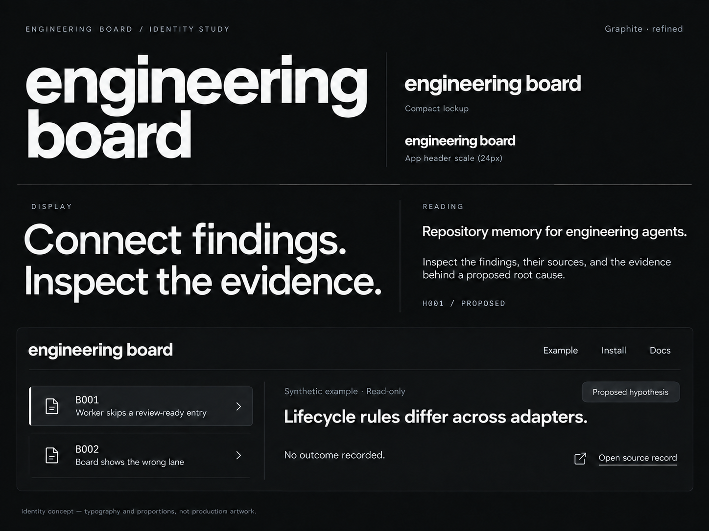

Accepted wordmark specimen / application cropReference image at native pixel density; a specimen, not a website viewport.

Implemented header and display type1448px desktop screenshot at native density; Manrope production substitute.